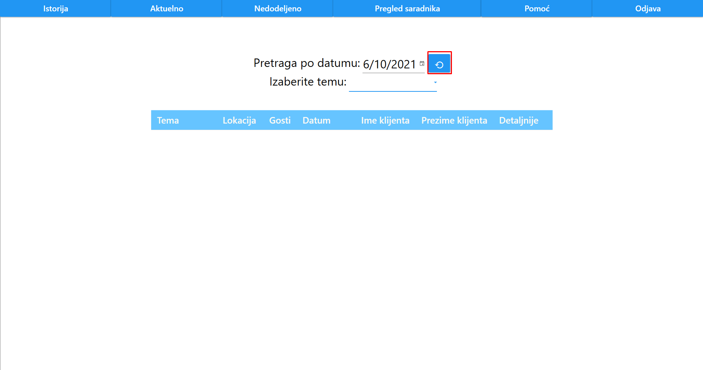
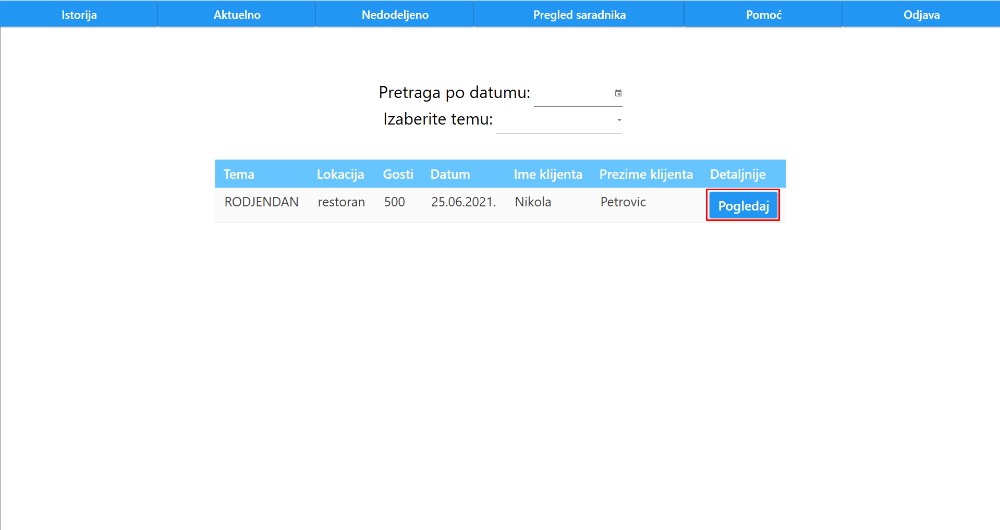
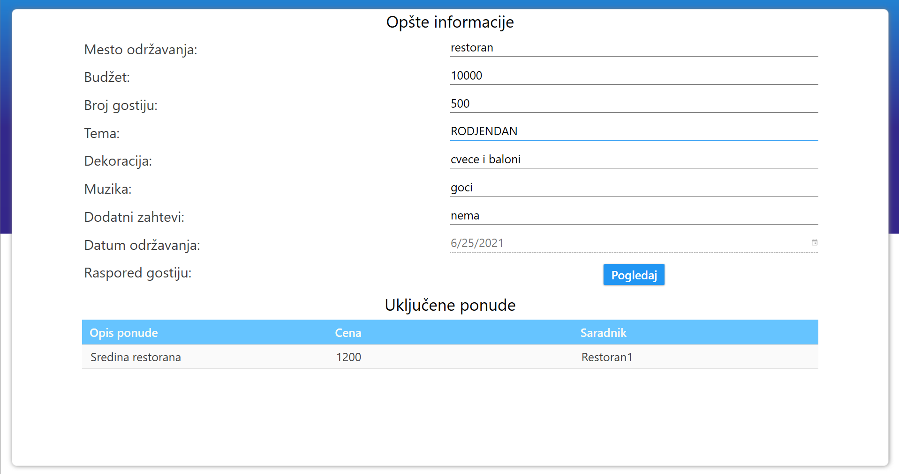
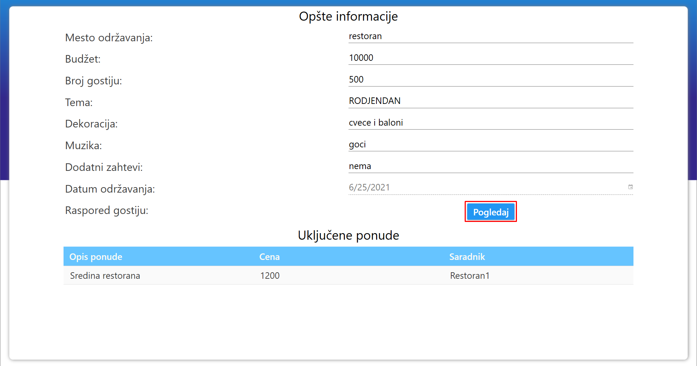
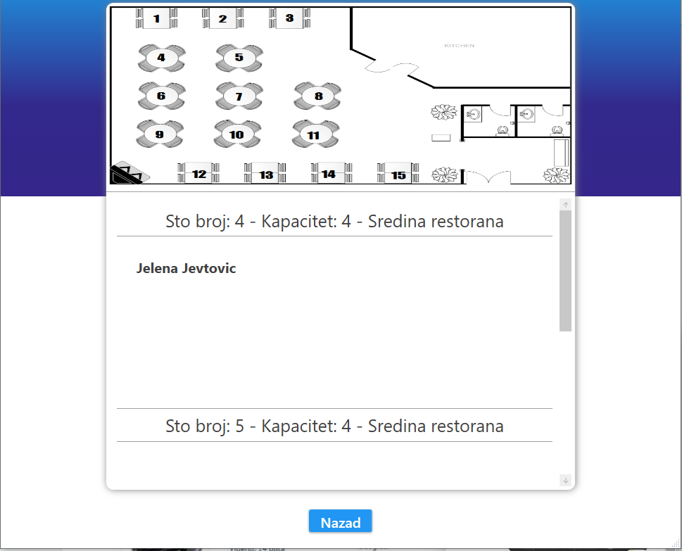
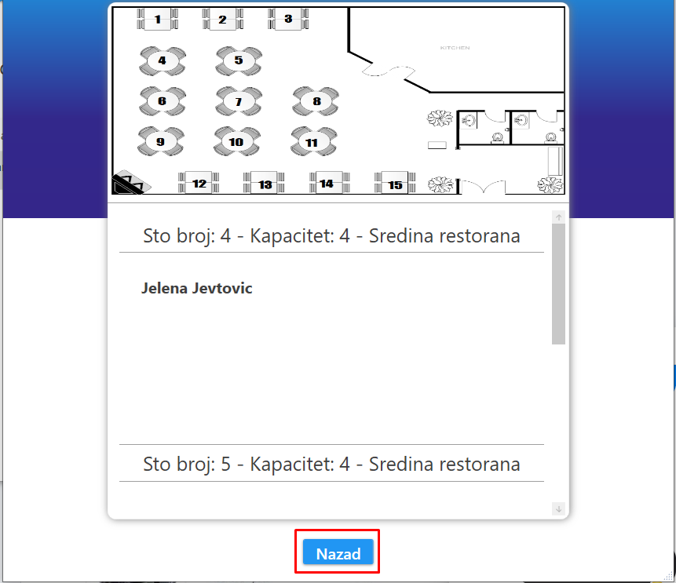

Nakon prijave organizatora ili klika na dugme "Istorija", korisniku se prikazuje istorija manifestacija.
Organizator može dodatno da filtrira po datumu održavanja manifestacije, kao i po temi.
Prikaz manifestacije je odrađen tabelarno, gde je za svaku manifestaciju ispisana tema manifestacije, lokacija, broj gostiju, datum, ime i prezime klijenta, kao i dugme "Pogledaj".
Ukoliko je organizator filtrirao po datumu, može da resetuje pretragu pritiskom na dugme koje se pojavi ispred datuma.
Ukoliko organizator želi detaljniji prikaz specifične manifestacije, njemu je to omogućeno klikom na dugme "Pogledaj".
Ovaj prikaz sadrži sve opšte informacije za datu manifestaciju, što podrazumeva mesto održavanja, budžet, broj gostiju, temu, dekoraciju, muziku, dodatne zahteve, datum održavanja, raspored gostiju i sve uključene ponude.
Pritiskom na dugme "Pogledaj" pored labele "Raspored gostiju", organizatoru će se pojaviti prozor sa detaljnim rasporedom gostiju.
Ovaj prozor sadrži sliku šematskog plana restorana, gde su svi stolovi numerisani.
Ispod ove slike nalazi se detaljan opis svakog stola. Ovaj opis sadrži broj stola, kapacitet i gde se taj sto nalazi u restoranu. Pored toga napisana su i imena gostiju koji su bili smešteni za tim stolom.
Klikom na dugme "Nazad", organizatoru se zatvara prozor.
